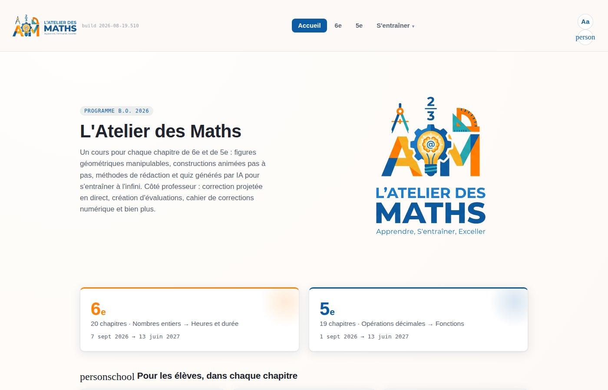

Un site vitrine, une application métier, un outil interne sur mesure — conçu avec vous, pour vos besoins réels, sans superflu.
Parlez-moi de votre projet →Vous avez une idée, un besoin, un problème à résoudre — transformons-le en outil concret.
Les logiciels génériques ne s'adaptent pas toujours à votre réalité. Parfois, la solution idéale n'existe pas encore — il faut la créer. Qu'il s'agisse d'automatiser une tâche répétitive, de centraliser des données éparpillées ou de proposer une expérience en ligne à vos clients, je conçois des solutions sur mesure, légères et maintenables.
Discutons de votre projetUn site rapide, élégant et optimisé qui reflète votre image et convertit vos visiteurs en clients.
Des outils sur mesure directement intégrés dans votre environnement Google — sans abonnement supplémentaire.
Une application web dédiée à un besoin précis de votre établissement ou de votre entreprise.
Intégrez l'intelligence artificielle dans vos processus pour automatiser les tâches à faible valeur ajoutée.
Visualisez vos données en temps réel pour piloter votre activité ou votre établissement plus efficacement.
Un outil qui s'intègre directement dans les logiciels que vous utilisez déjà au quotidien.
Plutôt que de vous parler de ce que je pourrais faire, voici un outil pédagogique complet que j'ai conçu et que j'utilise vraiment avec mes propres classes : un cours pour chaque chapitre de 6ᵉ et de 5ᵉ, des figures manipulables, des quiz générés par IA, et tout le nécessaire côté professeur pour gagner du temps au quotidien.

Pas d'intermédiaire, pas de chef de projet entre deux. Vous me décrivez votre besoin directement — je le comprends, je le questionne, je le construis. La communication est claire et rapide.
Je ne vends pas un template préfabriqué. Chaque projet démarre par un entretien pour comprendre votre contexte, vos contraintes et vos utilisateurs. Le résultat colle à votre réalité.
Le code source vous est livré intégralement. Pas d'abonnement caché, pas de dépendance envers moi. Vous pouvez faire évoluer votre outil par la suite avec n'importe quel développeur.
18 ans en milieu scolaire et une maîtrise technique réelle : je comprends les contraintes des établissements, des équipes administratives et des entreprises. Les outils que je crée sont adoptés facilement.
Je privilégie les technologies simples et gratuites — Google Workspace, GitHub Pages, APIs ouvertes. Pas de serveur coûteux, pas d'hébergement complexe. Des outils qui durent et qui ne coûtent rien à maintenir.
La livraison ne s'arrête pas au code. Je vous forme à l'utilisation de votre outil, je documente les fonctionnalités et reste disponible pour les ajustements après livraison.
Un processus simple, transparent et sans surprise.
On discute de votre projet, vos besoins, vos contraintes et vos utilisateurs. Gratuit et sans engagement.
Je vous soumets une proposition détaillée : périmètre, fonctionnalités, délais et budget. Tout est clair avant de commencer.
Je construis votre outil par étapes, avec des points réguliers pour valider ensemble la direction prise.
Mise en ligne, remise du code source, formation à l'utilisation et documentation. Votre outil est entre vos mains.
Des choix techniques raisonnés — simples à maintenir, économiques à héberger.
Pas besoin d'un cahier des charges complet pour démarrer. Une idée, un problème à résoudre, une tâche répétitive qui vous pèse — c'est suffisant pour un premier échange. L'entretien de découverte est offert, sans engagement de votre part.